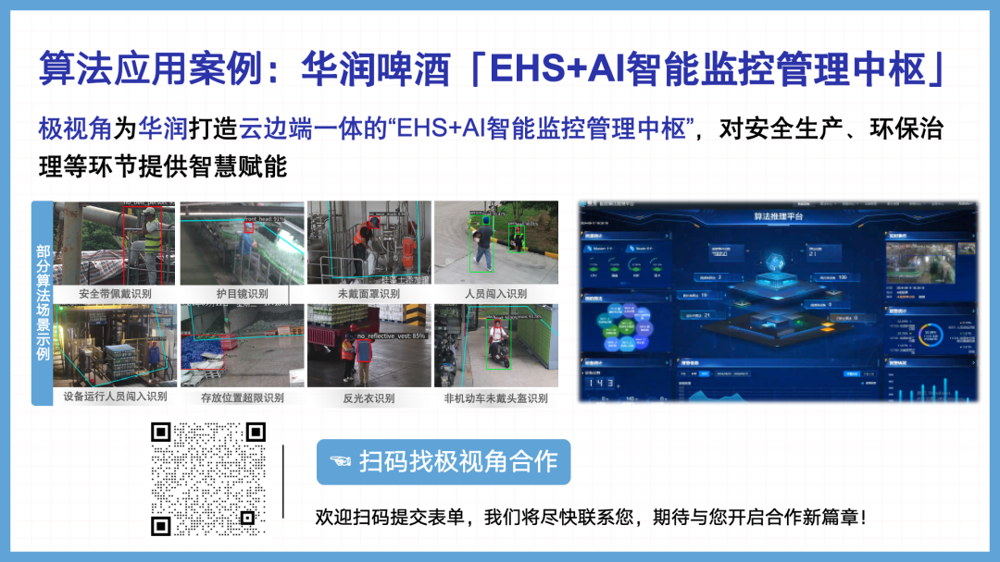

极市导读
本文把Anthropic 官方 15 篇工程博客系统梳理为“架构-工具-上下文-协作-评测”五步学习路径，呈现从极简 Workflow 到沙箱隔离、长任务 Harness、多 Agent 编排与自动化评测的完整 Agent 工程手册，为开发者提供可复用的生产级避坑指南。>>加入极市CV技术交流群，走在计算机视觉的最前沿
今天被Anthropic新出的Coworker刷屏了，Anthropic发布了市面上最牛的Coding Agent：Claude Code后，他们发现，很多人用Claude Code不仅仅是完成Coding任务，还能出色的完成很多写代码以外的任务。
那么干脆就新开发了一个产品，专注于Coding以外的领域。于是Coworker就诞生了。
目前来看，Anthropic这个公司，在Agent开发上已经是遥遥领先。他们公司不仅有先进的模型，各种Agent开发方法论也是特别值得学习的。
在 AI Agent 爆发的当下，不仅开源框架（如 LangChain, AutoGen）层出不穷，各种“最佳实践”也满天飞。
然而，作为开发者，在业务落地时，我们常常陷入困惑：
是该用单体 Agent 还是多 Agent 协作？ RAG 检索出来的片段上下文缺失怎么办？ Agent 在生产环境出问题如何调试？

与其在各种第三方框架的抽象层中迷失，不如回归本源，直接看看世界上做Agent最牛的公司都是怎么做的。
Anthropic的 Engineering Blog 是目前业界公认质量极高的技术宝库。
目前大部分市面上热门的Agent开发最佳实践，原始来源都离不开他们的博客。
我梳理出了一个阅读顺序，共15篇文章。可以顺着我推荐的这个阅读顺序进行阅读。
这 15 篇文章，不是营销宣传，而是他们用真金白银和算力堆出来的“避坑指南”。
我将这 15 篇文章梳理为 5 个核心模块，构建了一套从入门到生产环境的完整学习路径。
这些文章都不复杂，没有涉及很高深的算法逻辑，都是工程细节。

模块一：Agent 基础架构
复杂不代表好，从简单开始。
很多开发者一上来就想设计复杂的多智能体架构，结果系统极其脆弱。Anthropic 在基础篇中给出了最重要的建议：Start Simple。
必读文章：《Building effective agents》 解读：这篇文章详细对比了 Workflow（工作流）与 Agent的区别，并给出了 Building Blocks（构建块）。它通过 ReAct、Tool Use 和 Planning 的基础模式告诉我们：很多时候，你需要的只是一个定义良好的 Workflow，而不是一个不可控的 Agent。
在此基础上，配合《Building agents with the Claude Agent SDK》，你可以快速上手构建一个“符合第一性原理”的最小可行性 Agent。
模块二：工具与能力扩展
工具不仅是 API，更是 Agent 的“四肢”；思考是 Agent 的“内存”。
Agent 与 Chatbot 的本质区别在于“工具使用”。但如何让 Agent 像人类一样灵活使用工具，甚至在遇到错误时自我修正？
工具设计哲学：在《Writing effective tools for agents》中，Anthropic 强调了工具描述（Description）的重要性。这个Description到底怎么写，这篇文章有详细的阐述。 高级技巧：当任务复杂时，《Introducing advanced tool use》展示了如何进行并行调用和嵌套调用。 核心神技：《The "think" tool》是这一模块的亮点。它介绍了CoT（思维链）的工具化——让 Agent 在行动前先“停下来想一想”。这对于需要复杂推理的场景（如代码 debug、数学解题）是质的飞跃。
模块三：上下文与记忆管理
上下文窗口虽大，但“注意力”是稀缺资源。
随着上下文窗口（Context Window）突破 200k 甚至 1M，这就意味着我们不需要 RAG 了吗？错。
上下文工程：《Effective context engineering for AI agents》揭示了如何管理 Agent 的“短期记忆”与“注意力”。如何通过 Prompt 结构化让模型在长对话中不迷失，是每个Agent开发者的必修课。 RAG 的进化：《Introducing Contextual Retrieval》提出了一个想法——Contextual Retrieval（上下文检索）。传统的 RAG 切片会丢失上下文（例如切片中只有“他同意了”，却不知道“他”是谁）。通过让模型在切片前先生成一段解释性上下文，检索准确率得到了惊人的提升。这是目前 RAG 领域的 State-of-the-Art 实践。
模块四：长跑与协作——长任务与多 Agent
Demo 只要跑通一次，产品需要跑通一万次。
当 Agent 从 3 秒的对话变成运行 3 小时的任务时，挑战完全变了。
可靠性工程：《Effective harnesses for long-running agents》讨论了如何为长时间运行的 Agent 设计 Harness。如何处理中断？如何保存状态？如何从死循环中恢复？这是从Demo迈向生产环境的关键。 多智能体协作：在《How we built our multi-agent research system》中，Anthropic 分享了内部构建多 Agent 系统的架构。这对于需要 Orchestrator-Workers模式的复杂项目极具参考价值。
模块五：最后的一公里——安全、评测与工程化
没有 Evals（评测），就不要上线。
这是最枯燥，但也是区分“Demo”和“工业级Agent”的模块。
评测体系：《Demystifying evals for AI agents》是全系列的必读之作。它打破了“看感觉”的开发模式，建立了一套基于 LLM 评分的自动化测试体系。 安全沙箱：当赋予 Agent 编写和执行代码的能力时（如《Claude Code: Best practices for agentic coding》），安全风险指数级上升。《Beyond permission prompts》和《Code execution with MCP》展示了如何通过沙箱（Sandboxing）和 MCP 协议，在赋予 Agent 自由的同时，给它戴上“镣铐”。 失败复盘：《A postmortem of three recent issues》通过三个真实的故障案例，展示了 Agent 在真实世界中会如何“花式犯错”，这是花钱买不来的实战经验。
结语：站在巨人的肩膀上
Anthropic 的这 17 篇文章，实际上构成了一份 Agent Engineering Handbook（Agent 工程手册）。

如果你正在构建 Agent，必须读读这15篇文章，并按照架构 -> 工具 -> 上下文 -> 协作 -> 评测的顺序研读。在这个日新月异的领域，盲目追逐新框架不如深挖底层逻辑，因为工具会变，但工程原理永存。
(附：完整的 15篇文章清单及分类) Anthropic Agent 最佳实践系列
模块一：Agent 基础架构（入门篇）
模块二：工具与能力扩展（进阶篇）
模块三：上下文与记忆管理（核心篇）
模块四：长任务与多 Agent（高级篇）
模块五：安全、评测与工程化（生产篇）
公众号后台回复“数据集”获取100+深度学习各方向资源整理
极市干货

点击阅读原文进入CV社区
收获更多技术干货